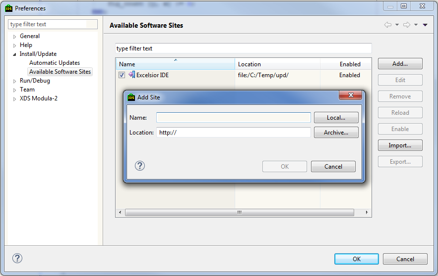
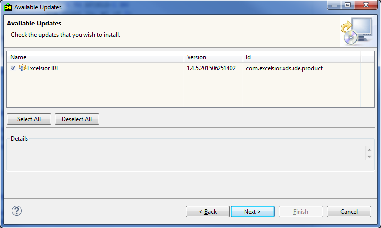
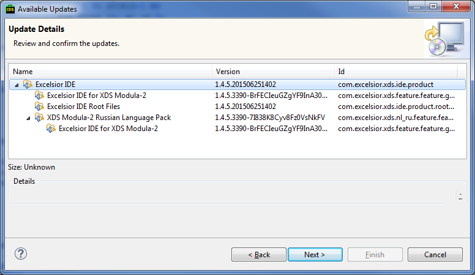
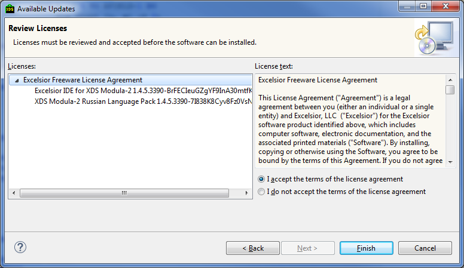
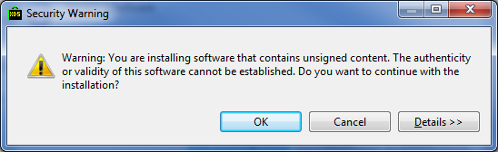
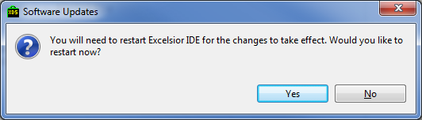
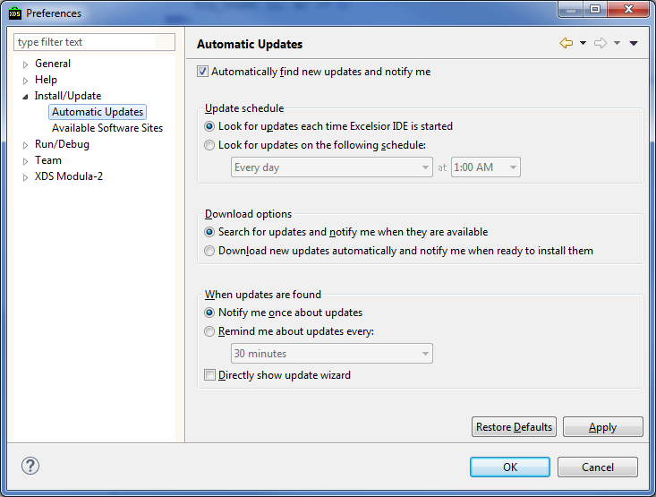
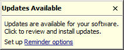

В интегрированной среде разработки поддерживается два вида обновлений:
Под внешними ресурсами подразумеваются файлы, расположенные вне директории, в которую установлена интегрированная среда. К таким ресурсам, прежде всего, относятся компоненты самой КСП: компилятор, отладчик, прочие инструменты, шаблоны создания новых модулей и проектных файлов.
Как правило, обращение к внешним ресурсам происходит по ссылке, то есть в интегрированной среде хранится только путь до данного ресурса. Каждый раз при обращении к данному ресурсу он заново загружается в оболочку.
Для обновления таких ресурсов достаточно обновить их в файловой системе, и при следующем обращении к такому ресурсу будет автоматически использована новая версия данного ресурса.
Обратите внимание, что конфигурационный файл sdk.ini, используемый для быстрого подключения КСП, вообще не относится к ресурсам интегрированной среды. Он читается только один раз при подключении КСП. Поэтому для того, чтобы все выполненные в нем изменения вступили в силу, необходимо заново подключить данное КСП.
Для обновления компонент интегрированной среды используется штатная система обновлений Eclipse на основе Сайтов Обновлений (Update Sites). Сайт обновлений это специального вида директория, в которой размещены новые версии компонент интегрированной среды и манифест обновлений – специальный файл, описывающий структуру доступных обновления. Сайт обновлений может быть размещен на http-сервере, сетевом или локальном диске. Платформа Eclipse поддерживает неограниченное количество сайтов обновлений.
Чтобы воспользоваться системой обновления Eclipse прежде всего необходимо указать путь до сайта обновлений соответствующей компоненты или групп компонентов. Для этого необходимо выполнить следующие шаги:

После этого, в любой момент можно проверить наличие новых обновлений, выбрав в главном меню Help > Check for Updates. Если доступны новые обновления, то запустится мастер установки обновлений.

На первой странице мастера обновлений предлагается выбрать, какие из доступных обновлений необходимо устанавливать. Следующая станица предоставляет более детальную информацию о том, какие компоненты будут обновлены.

На последней странице мастера обновлений, будет предложено принять лицензионное соглашения. Для этого необходимо явно выбрать пункт I accept the terms of the license agreement.

После этого для установки обновлений остается нажать кнопку Finish. Если устанавливаемые обновления не содержат цифровой подписи, то в процессе установки будет выдано предупреждение. В этом случае необходимо явно дать согласие на установку обновлений, нажав кнопку OK.

После установки обновлений возможно потребуется перезапуск среды. В этом случае будет выдано соответствующее сообщение. Для перезапуска среды необходимо нажать кнопку Restart Now.

Частота проверки обновлений интегрированной средой задается в диалоге Preferences. Для ее настройки необходимо:

Если при автоматической проверке обнаружены новые обновления, то в правом нижнем углу интегрированной среды появится соответствующее сообщение:

Двойной щелчок мышью по этому сообщению откроет диалог для установки доступных обновлений.